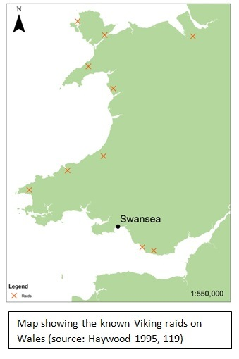
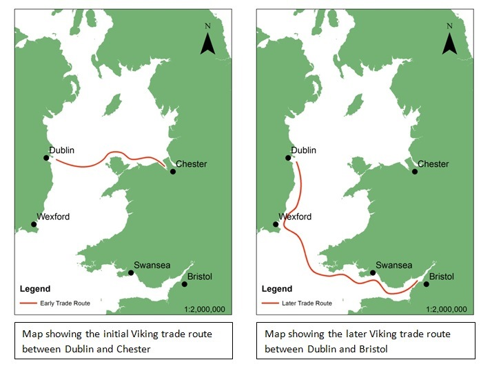
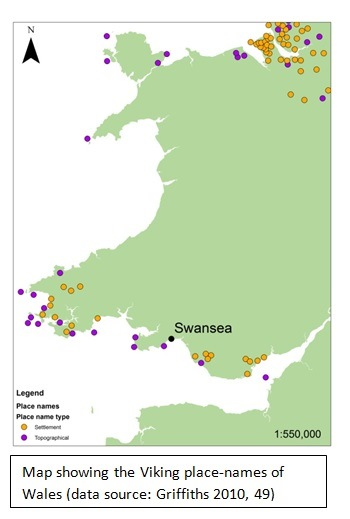
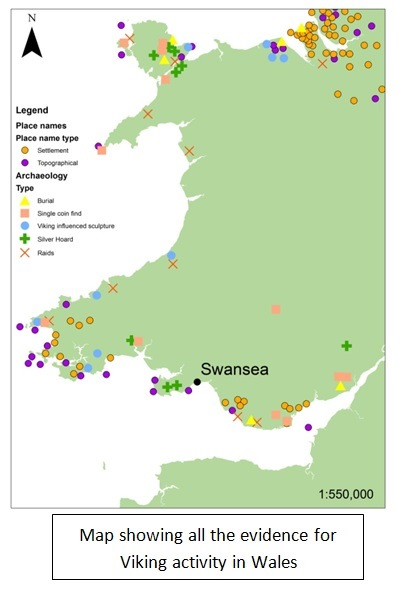
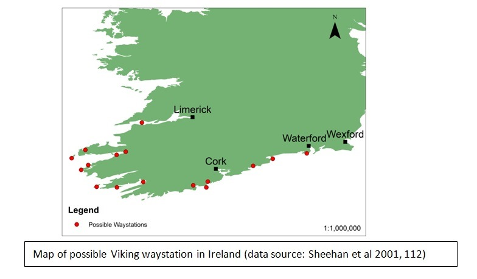
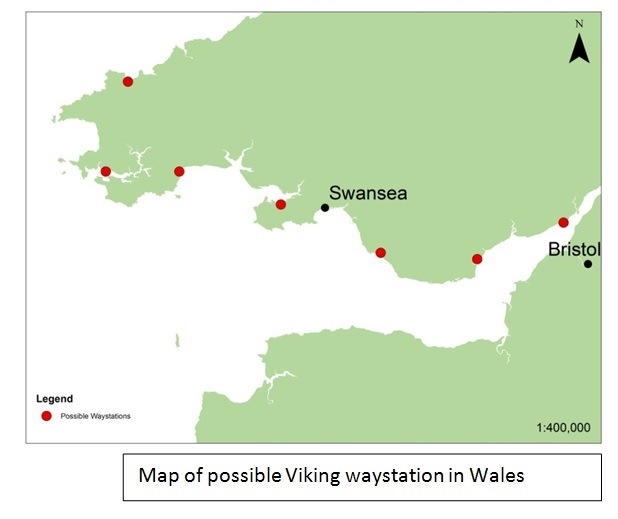
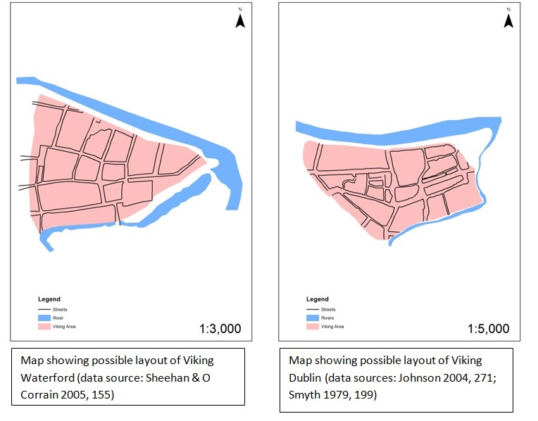
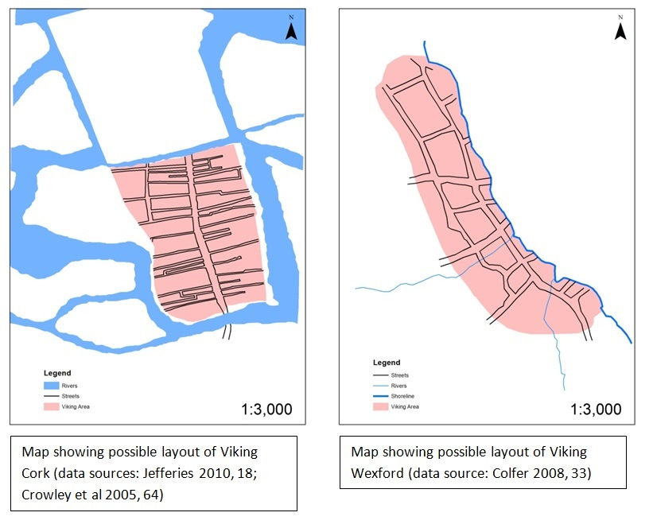
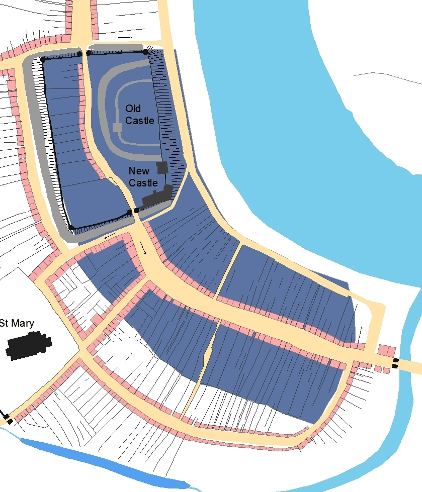
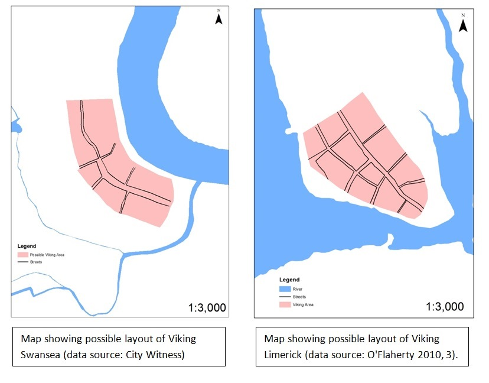

Viking Swansea
Claire Holmes and Keith Lilley
The place name of ‘Swansea’ is first recorded on coins dated to the 1140s, indicating the presence of a mint in Swansea. Despite this, the often-cited view is that the name is of an earlier, Viking origin (‘Sweyns-ey’ – Sweyn’s island). Whether or not Swansea has Viking origins as a settlement remains a vexed issue. Although alternative suggestions for the name have been put forwards, it is worth reviewing the circumstantial evidence that might support the town’s Viking ancestry. The evaluation that follows here draws upon research undertaken using existing information on archaeology, linguistics and topography, and using a Geographical Information System (GIS) to map out these historical sources to look at how Swansea may have fitted into the wider pattern of Irish-Norse trading activity, as well as how the layout of part of the medieval town is similar to some Viking towns in Ireland.
There has been relatively little research into Wales’ Viking past when compared to the other parts of the British Isles. Welsh historians and archaeologists have focused almost exclusively upon their Celtic past and there has been little interest in Vikings. Part of the reason for this is probably the lack of written sources for Wales. Unlike Ireland and England where the Irish annals and Anglo-Saxon chronicles tell us much about the activities of the Vikings, Wales lacks contemporary sources. This has led many to believe the Vikings therefore had little or no impact on Wales, however this lack of written records doesn’t necessarily mean a lack of Viking activity.

During the Viking period Wales was divided into several petty kingdoms whose rulers were almost continually in conflict with each other. We do have some evidence for Viking raiding taking place in Wales, starting in 852, when Cyngen of Powys was slain by the ‘gentiles’ a common name for the Vikings in the annals. This reached a climax in 914 and then there was a time of relative peace until the mid-tenth century.
During the Viking Age the Irish Sea would have acted as a highway for the Viking traders, trade between the Vikings who settled in Ireland, the Hiberno-Norse and the Anglo-Saxons is well documented and was probably quite extensive. In the initial phases of Viking activity their main trade route ran from Dublin to Chester.

This invariably brought the Vikings into close contact with the north coast of Wales. Then during the latter part of the Viking Age, Bristol replaced Chester as the principal focus for Hiberno-Norse trade with Anglo-Saxon England. This new route would have brought the Vikings along the South coast of Wales and Swansea, with its safe natural harbour, would have been a logical stopping point. There was also the potential of potentially rich inland trade with the Welsh, the native Welsh Princes would have no doubt found a trading town very convenient.
Sources for Viking activity in south Wales
The most direct evidence for Viking activity in Wales comes from the Viking sagas. The Jómsvíkinga saga tells the story of a Viking marrying a Welsh princess and gaining half a Welsh kingdom and other sagas, like Njála and Orkneyinga Saga, show the familiarity the Norsemen had with Wales and the Welsh coast. Strikingly the annals of Loch Ce explicitly state that merchants from Wales came to Dublin Bay to fight in the battle of Clontarf in 1013 and it is almost certain that these were Vikings who had settled in Wales and not native Welsh as they are not known to have been merchants at this time.
In the Irish records, Welsh horses are mentioned on various occasions, they appear to have been the most highly prized during the Viking Age and a trade in them seems to be firmly established at this time. Clearer evidence for Viking contact with Wales comes from the Historic and Municipal Documents of Ireland. It records the names of the citizens of Dublin at the end of the twelfth century and records a large number of people from Bristol, Cardiff, Swansea, Haverfordwest and other towns on the Bristol Channel, most of which had Norse names. This shows that there were Scandinavian traders who had settled in these towns at least by this late date.
There is no direct documentary evidence to prove that Norse settlements were established in Wales but we should not attach too much weight to this. Several previously unsuspected Viking settlements have been discovered in recent years, for example at Woodstown, Co. Waterford and at Llanbedroch, Anglesey, these where both Viking trading and manufacturing settlements. What the documentary sources do record however, are some instances of Viking raids along the Welsh coast and these have been added to the GIS and mapped out here.
One aspect of their culture which the Vikings brought with them to every coast they visited was their language. This they imposed with varying degrees of success upon all areas in which they stayed for any length of time. In the British Isles the linguistic legacy of the Vikings’ language consists mainly in loanwords. Scandinavian loanwords in English are both numerous and well documented. In Wales, however, vocabulary is scarcely affected; there are no syntactic or morphological changes that can be attributed to the Norsemen. Some writers have claimed that the colloquialisms of South Pembrokeshire indicate Norse influence. This evidence however, is not strong and is certainly not proof of extensive Norse colonisation.
Perhaps the greatest evidence we have for Viking settlement in Wales is not from language, but from place-names. Viking place-names come in two types; topographical names, or a generic name denoting a settlement. The instances in which these two types occur have been mapped as shown here.
There is a scattering of Viking place-names along the north and south coasts of Wales. It is interesting to note that instances of Viking place-names occur much more frequently along the south coast. Some scholars have argued that this relative abundance of place-names does not denote actual settlements but merely indicates the Vikings’ use of these places as navigational markers. However, others point out the difficulty in explaining the survival of these names without the presence of at least some Scandinavian speakers on mainland Wales. The establishment of small Viking markets and settlements along the south Welsh coast seems the most obvious explanation for the adoption of these names into common usage.

Archaeological evidence for Viking activity is also present in south Wales, although unfortunately not for any physical settlement remains. Various Viking burials, single coins and hoards have been discovered in Wales, mainly along the coast. Another interesting source of evidence of Viking presence comes from sculpture. Stone slabs and crosses were common during this period and several examples found in Wales have heavy Viking influence such as the splendid pillar-cross at Nevern, Pembrokeshire. The occurrences of these sculptures have also been mapped and shown here. The erection of these crosses is clearly more likely if contact between the Vikings and the Welsh was direct and continuous, for example through a settlement. Another piece of archaeological evidence for Viking activity in Wales is the excavation of a possible Viking trading ship at Alexandra Dock, Newport in 1878, where a portion of the side of a Viking ship, thought to date from 900 was discovered.
There are some other forms of evidence for Viking activity in Wales which, while they cannot be easily geographically located, are of special interest. For example, in Carmarthenshire there are some odd survivals of possible Scandinavian names in family genealogies. Recent research has also shown the presence of local population with rare blood types. The frequency of A genes among the indigenous population of Pembrokeshire, for example, occurs at levels of up to 33.6 percent, which is far higher than anywhere else in Wales and is only matched in parts of Scandinavian.
Placing the Vikings in Wales in context
When we look at the GIS-based map with all these various forms of evidence mapped together trends of Viking activity in Wales begin to emerge.

Activity is generally more prevalent along the coasts, in particular along north and the south coasts of Wales. Also of note is the cluster of activity between Anglesey and north Wales, and significantly the recently-discovered Viking site of Llanbedrgoch lies right at the centre of this cluster of activity. The high incidence of evidence along the south coast matches indicates how important and highly trafficked the trade route was between Dublin and Bristol for the Vikings.
Although on the whole, archaeological data for Wales is limited, some scholars suggest there were various areas of Viking settlement along the south Wales coast. Further evidence to support this view comes from looking at Viking activity not just in Wales but also on the Irish side of the Irish Sea. In fact a series of settlements along the coast may have been necessary to the Viking traders moving around the Irish Sea.
The idea of a series of settlements along the coast of south and east Ireland began with the reinterpretation of an existing archaeological site on Beginish Island, Co. Kerry. Sheehan et al proposed there was a long-lived settlement there that functioned as a Viking Age maritime waystation. The house types excavated at the site are similar to those of Viking Dublin and the finds are as sophisticated as those found in the tenth-century towns. Considering the Beginish site in the context of its location situated on the route between Viking Cork and Limerick, it seems hardly possible that the strategic importance of the island, as a natural heaven for supplies, shelter and repairs, could have been overlooked by the Vikings.
Way-stations such as Beginish would have been essential during the Viking Age. From written sources we know that as far as possible Vikings would travel by day and hug the coast so they at least needed somewhere to overnight. It has been calculated that a typical Viking boat could only be rowed 36 nautical miles per day in bad weather. Therefore a whole series of these waystations would have been necessary to act as havens in times of bad weather and also as places to rest or carry out repairs to ships.

Sheehan et al suggest the existence of Scandinavian settlements all along Ireland’s western coast, linking Limerick all the way to Dublin and using historical and toponomastic evidence have identified a dozen or so possible way-stations. So if we accept this premise of the necessity of a series of way-stations along the coast between the major trading towns and apply it to Wales, using the data already collected, a series of probable areas of Viking settlement can be identified. With its wide natural harbour, Swansea would be an obvious one of these waystations in south Wales.

If Swansea began life as a small way-station such as that on Beginish Island, unlike Beginish, Swansea had a rich hinterland and through trading with the local Welsh a settlement could have quickly grown into an important trading town. As this was such an obvious advantage to the Welsh princes it would be unlikely to involve hostility and warfare of the type to be recorded in the written record.
Comparisons with Viking towns in Ireland
Another very important strand of evidence to look at in determining Swansea’s origin is the town itself. It was through plan analysis as part of the City Witnes project that the idea of a Viking origin for the town resurfaced. Viking towns often have a distinctive plan, so does Swansea follow this? To investigate this, the layout of Viking towns in Ireland, namely Dublin, Cork, Limerick, Waterford and Wexford, are examined and compared with each other here, and with Swansea, to see how far Swansea fits the model. There are three main areas for comparison; location, layout and defences.
The Irish Viking – or ‘Hiberno-Norse’ – towns named above were chosen for comparison for two reasons. Firstly due to the lack of urban development in Ireland before the Vikings’ arrival these towns are entirely ‘Viking’ in character and can be thought of as a blueprint of what Scandinavians would have thought to be an ‘ideal town’. Secondly and perhaps more importantly, if Swansea was founded by Vikings then it was most likely by the Hiberno-Norse from the major trading towns in Ireland. Examining the Viking elements of these towns is made difficult by the differing amounts of excavation undertaken in the various towns, the variety of the nature and location of the sites which has led to different degrees of preservation and there has also been a general lack of syntheses from the individual towns.
All of the Irish Viking towns started out as ‘longphort’ or ship-bases and then began to take on the functions of trading and manufacturing enclaves, quickly developing as active centres in a network of overseas trading. They are all very extremely similar in terms of their locations. The Viking towns in Ireland are usually located on relatively high ground overlooking the confluences of tidal river estuaries and their tributaries. Indeed, this is typical of Viking towns in general not just in Ireland. The choice of river also seems to have been important to the Vikings, generally they are sited on rivers which gave access to rich interiors or hinterlands. For Dublin this river is the Liffey and its tributary the Poddle, for Wexford it’s the confluence of the Slaney and it’s tributary the Bishop’s Water River, Limerick is sited just to the north of the confluence of the Shannon and it’s tributary the Abbey River, Waterford is situated on a triangular promontory bounded on the north by the river Suir and the south-east by marshy ground on either side of the St John’s river. Cork is slightly different in that it lies on an island in the River Lee.The reason for these locations seems to be twofold, sheltered mooring and defensive. Swansea’s location fits in with this pattern very well; it is situated on high ground not far along the River Tawe, a fairly large and navigable river, within easy reach of the open sea and has a large and sheltered harbour.

The possible layout of each of the Viking towns in Ireland has been modelled in the GIS using ArcMap and simplified plans produced, reproduced here. These plans are based on excavation reports, historic maps and previous scholarly inference. In no case has a complete town plan from the Viking age been recovered and mapped. The areas which have been excavated are small and they do not necessarily give us much information about the specifics of the towns during the Viking age. Therefore, it is important to remember that these plans are just models and so conjectural.

From examining the layouts of Viking towns in Ireland they seem to have consisted of one or two main streets, parallel to the shore or a riverbank, with lanes running back from it at right angles. The streets tend to follow the natural contours of the locations chosen. This is also the case in Swansea, where the suggested Viking area of the town consists of one main street running parallel to the river with lanes running back at right angles. Its layout does not look out of place among the Hiberno-Norse towns; in fact it appears very similar to the plan of Viking Limerick, as can be seen here.

Another important aspect of the layout of the towns is their size. Limerick and Cork are similar in size to each other as too are Waterford and Wexford. Unsurprisingly Dublin is by far the largest, for it was the most important trading town for the Vikings of the Irish Sea. Swansea is slightly smaller in area than the Irish towns; however, this is probably to be expected as it would never have been as important a site as the Irish examples. Only one Viking street in Ireland has been excavated: Peter Street in Waterford. Here, sixteen metres of the original surface was uncovered and had a maximum width of 3.6m. Estimates for Swansea street-widths calculated from the GIS work indicates a similar range.

At both Dublin and Waterford excavations have shown the presence of defensive stone and earthen walls encircling the towns during the Hiberno-Norse period. In the written records Giraldus Cambrensis uses the term murum to describe Wexford’s and Dublin’s defences and he also uses the same term for the town walls of Waterford and Limerick which implies that they were also defended by stone walls before the coming of the Anglo-Normans in the twelfth century. However, it seems clear that Viking Cork had no town walls of stone. This is possibly because its position on an island may have been thought of as enough of a defence. At Swansea, too, there are no tangible indications that there were pre-Norman defences, unless those of the castle and around Wind Street were set out on earlier alignments.
Conclusion
So was Swansea founded by the Vikings? The evidence for Viking activity in Wales certainly puts forward a highly convincing argument for a lot of Viking influence in and around Swansea along the adjacent coasts. The theory that Vikings used a series of waystations along their trading routes adds much weight to the idea of permanent settlements in Wales. Looking specifically at Swansea itself, it does not look out of place when compared to other Viking towns around the Irish Sea coasts.
Taken on their own none of evidence laid out here would constitute a credible argument, but taken together they appear consistent and mutually reinforce each other. The picture that builds up from looking at the evidence is that the founding of Swansea under the Vikings is plausible. After all, something drew the Normans to the site. The name Swansea was sufficiently well entrenched and regionally important to be taken over by the Anglo-Normans in around 1100.